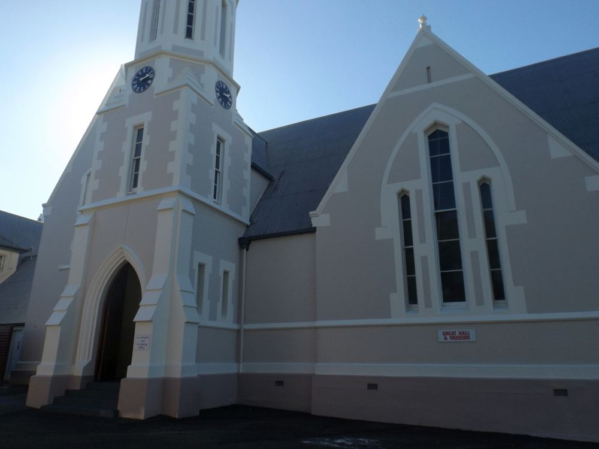
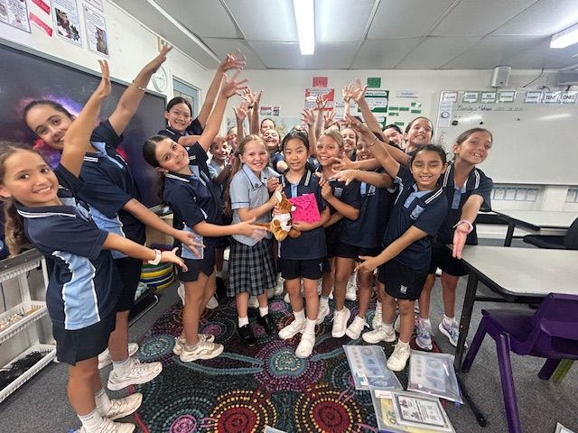
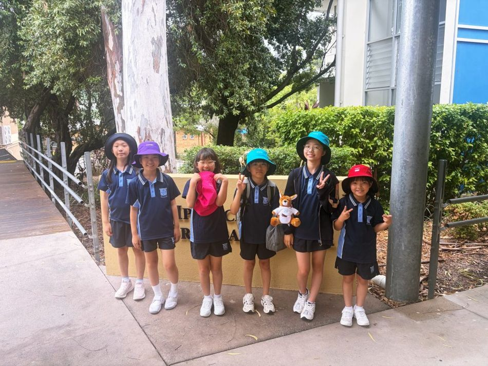

SCHOOL
함께할 학교를 소개합니다.
확인된 학교 정보와 학교생활 참고 사진을 안내합니다.
THE SCHOOL
Ipswich
Grammar School
호주 퀸즐랜드주 · 1863년 설립
학교 정규 학기에 편입해 현지 학생과 같은 수업에 참여합니다.
1863학교 설립 연도
최대 10주학교 정규 학기 기준



협업사 공개 학교생활 참고 사진입니다. 본 과정 참가 기록과는 구분합니다.
확인 중인 자료 보기
[자료 대기: 대상 학년·성별·참가 자격, 학교 공식 확인 자료] / [자료 대기: 학교별 특장점 표 및 추가 학교 정보]